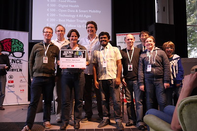

How long have I been a software developer?
Since 8th August, 2008. So, .
Since 8th August, 2008. So, .
About Me
Hello! I’m Srinivas Vishnu Vardhan Pasupula. I am passionate
about learning new tools and technologies and writing code. I am interested in
projects that involve C/C++ and/or python development. I enjoy automating tasks by
writing Python scripts. I aspire to design and develop a home automation system.
Learning and improving myself is my raison d'etre.
Age
30
Email
srinivasvvp@outlook.com
Phone
+91-6304862894
Address
H.No.39-55, Sai Balaji township, Badangpet,
Hyderabad-500058, India.
Professional Skills
C, C++, Python.
CUDA C, Java, HTML, JavaScript, CSS, Docker, HTML5, OpenCL,
Spring MVC, LaTeX, Shell scripting and SQL (IBM DB2,
MySQL).
MATLAB, TensorFlow by Google and scikit-learn for Machine
Learning, ROS
Work Experience
Tech Lead
at ZF Technology Center, Hyderabad, India
September, 2018 - Present
Design and develop infrastructure and integrate, implement and test
Simulation in
Loop systems.
- Gathered requirements from client and wrote corresponding requirements for SiL usecase.
- Using C/C++, I have implemented Simulation counter parts for the hardware components (ex. camera).
- Using Socket Communication protocols (TCP and UDP), implemented applications using C/C++ that can send and receive large amounts of data (image, audio, sensor signals).
- Implemented a way to load and unload sensor and actuator modules during runtime in an application developed using C/C++. This led to reduction of time to build and test the modules on SiL infrastructure.
- Implemented multiple tools using Python to improve the products of our BU.
- Implemented CI/CD pipelines in both Jenkins and Azure environments.
- Developed Jenkins Shared Libraries that will be used in CI/CD pipelines to reuse code and reduce code duplication.
- Implemented code generators in python to convert files from other formats to C++ classes (for ex. YAML files, Jinja templates)
- Encouraged the use of C/C++ package management tool called Conan(https://conan.io) in our organization to make application development for different OSs and architectures simpler and error free.
- Trained and continue to support colleagues from various other teams in python development and C/C++ package management using Conan and CMake.
- Developed an eclipse plugin for Conan and also an automating script that makes it easier for anyone to use Conan without actually needing to learn Conan.
Technical Skills
C/C++
Python
Shell scripting
Docker
CarMaker
Java
ROS
CI/CD
Azure
Tools
Using Docker with linux base image
CarMaker
Eclipse
VSCode
Embedded Software Design Engineer
at ASML, Eindhoven, The Netherlands
November, 2016 - August, 2018
Design and develop software for Immersion hood part of the
Lithographic systems of ASML.
- Gathered client requirements for the Immersion Hood.
- Developed embedded software libraries using C/C++.
- Learnt about different software development standards followed in open source code and ASML's own standards and conformed my development to these standards.
- Using python and GTest unittest framework, implemented unit tests and improved test software coverage for legacy code and also any new development done.
Technical Skills
C/C++
Python
Shell scripting
Tools
WindRiver workbench on a Linux operating system.
Graduate Researcher
at Oce Technologies (A Canon Company), Venlo, The
Netherlands
January, 2016 - August, 2016
The printers developed by Oce are large scale printers and are
productive when printing large number of sheets such as books, pamphlets, etc.
In the Research and Development part of Oce, work is done to improve the printer
quality while reducing per print cost of a print job.
- Researched available literature on schedulers and experimented with new ideas to improve the scheduling algorithm's performance.
- I have modeled, implemented these improvements and analyzed which model improves performance of the scheduler the most using Pareto graphs.
- Scheduler's execution time depends on how many sheets need to be scheduled. Compared to the scheduler that was already being used in production, my implementation produced schedules almost 12x faster.
- I have experimented using OpenMP and CUDA to improve the performance.
- I have modified the scheduler's algorithm to use it as an "on-line scheduler" with quality of schedules changing by only +/-10%.
- My work and research for this thesis has contributed to my mentor's Ph.D and also a patent has been filed for this scheduler algorithm at the European Patent Office.
Technical Skills
C/C++
Python
Shell scripting
Tools
Eclipse for C/C++
spyder for Python on a Linux operating system
Software Engineer
at Net.Orange
June, 2012 - June, 2014
Net.Orange was a healthcare technology company which developed, managed and
supported various clinics and healthcare organizations using a web operating
system
called 'clinical Operating System'.
- Understand the Clinical Operating System, in both front and back-end departments.
- Understand the requirements, create mocks and develop new user interfaces for new modules for different clients.
- Fix any defects that are raised based on priority.
- Assigned to work on the requirements for a specific client, understand the software requirements, both front-end and back-end.
- Develop back-end (services & database) using JavaEE, MySQL keeping in mind all the stakeholders, their roles and their requirements.
Technical Skills
Adobe ColdFusion
HTML
CSS
JavaScript
JavaEE
Xmaps and XQuery
QBE(Query By Example)
Tools
Eclipse for Java
MySQL for SQL development
Adobe ColdFusion IDE for ColdFusion
Linux
Education
Masters in Embedded Systems
from Eindhoven University of Technology, Eindhoven, The Netherlands
from Eindhoven University of Technology, Eindhoven, The Netherlands
August, 2014 – August, 2016
Master Thesis: on Scheduling and Optimization of Heuristic Production Printer
Scheduler[2].
Some interesting subjects
Embedded Computer Architecture
Quantitative Evaluation of Embedded
Systems
Embedded Visual Control
Networked Embedded Systems
Video Processing
, etc.
Bachelor’s in Electronics & Communication Engineering
from Keshav Memorial Institute of Technology (KMIT), affiliated to JNTU Hyderabad
from Keshav Memorial Institute of Technology (KMIT), affiliated to JNTU Hyderabad
June, 2008 - June, 2012
Some interesting subjects
C Programming & Data Structures
Control Systems
Computer Organization
Microprocessors
& Interfacing
Computer Networks
Operating Systems
, etc.
Projects
Internship
at Net.Orange
June, 2011 – March, 2012
Learnt various technologies used in developing clinical Operating System (cOS)
and worked on internal projects.
LogAnalyzer: Is an interesting internal project I was a part of. The cOS generated huge sized log files on the production system. To make it easy for the developers to go through the log, we developed a system that analyzes log files and indexes them using Apache Lucene. Using the index, the developers were able to search the logs.
Achievements: Selected as the best intern for that year.
LogAnalyzer: Is an interesting internal project I was a part of. The cOS generated huge sized log files on the production system. To make it easy for the developers to go through the log, we developed a system that analyzes log files and indexes them using Apache Lucene. Using the index, the developers were able to search the logs.
Achievements: Selected as the best intern for that year.
Technical Skills:
Java
Spring MVC
Java Struts
Summer Internship
in Google Summer of Code
April, 2010 – August, 2010
Participated in Google’s annual summer internship program, Google Summer of
Code in 2010 and contributed to
MiFOS (Micro Finance Open Source) application using FreeMarker and Spring
MVC.
Achievements: Awarded 5000 USD for the internship and college fee waiver for the last two years of my Bachelors at KMIT.
Achievements: Awarded 5000 USD for the internship and college fee waiver for the last two years of my Bachelors at KMIT.
Technical Skills:
Java
Spring MVC
Java Struts
Optical Flow on FPGA
at Eindhoven University of Technology, Eindhoven, The Netherlands
at Eindhoven University of Technology, Eindhoven, The Netherlands
2015
As part of Multi-Disciplinary Design Project, "Optical Flow", an
application
that gives the motion vectors of
a moving object is designed to adapt for, developed and deployed on a 4
MicroBlaze core FPGA platform.
Development was done in C using Synchronous Data Flow architecture on
CoMPSoC
FPGA platform.
Technical Skills:
C/C++
Open MP
Autonomous Solar Powered Sailboat
at Eindhoven University of Technology, Eindhoven, The Netherlands
at Eindhoven University of Technology, Eindhoven, The Netherlands
2015
As part of Embedded Visual Control course, we built a sail boat and programmed
it to sail automatically using
artificial vision. I developed the algorithm for the sail boat to track specific
colored objects in the water using
OpenCV in C and sail towards them.
Technical Skills:
C/C++
Open CV
JPEG Decoder on FPGA
at Eindhoven University of Technology, Eindhoven, The Netherlands
at Eindhoven University of Technology, Eindhoven, The Netherlands
2015
As part of Embedded Systems Lab course, JPEG Decoder application is ported onto
a CoMPSoC[3] FPGA board
with 4 MicroBlaze processors. The goal of the assignment was to speed up the
application.
Technical Skills:
C/C++
GPU parallelization project
at Eindhoven University of Technology, Eindhoven, The Netherlands
at Eindhoven University of Technology, Eindhoven, The Netherlands
2015
As part of this assignment, a coin mining application is ported from CPU onto
GPU platform using CUDA C to
speedup the execution time and increase the number of coins mined in a given
amount of time.
Technical Skills:
C/C++
CUDA C
Open MP
Personal Cloud project
in DevCamp @ Océ Technologies, Venlo, The Netherlands
in DevCamp @ Océ Technologies, Venlo, The Netherlands
2015
Developed and deployed a personal cloud storage system on Raspberry Pi to store
personal data, concentrating
mainly on the data from personal devices like smart watches, armbands, etc., as
a part of IoT project.
Technical Skills:
Python
BatSense
in Science Hack Day, Eindhoven, The Netherlands
in Science Hack Day, Eindhoven, The Netherlands
2014
Developed a wearable (armband) for blind people to detect obstacles. Won
Digital
Health Certificate by Philips
Design.
Event details can be found here.
Event details can be found here.

Technical Skills:
C/C++
Open CV
AuGMentor
in Sports Hackathon, Eindhoven, The Netherlands
in Sports Hackathon, Eindhoven, The Netherlands
2014
Developed an Augmented Golf Mentor (AuGMentor), an application on the phone
using gyroscope, accelerometer
to calibrate and help the user in learning Golf.
Technical Skills:
C/C++
ZigBee + GSM module
at KMIT, JNTUH, Hyderabad, India
at KMIT, JNTUH, Hyderabad, India
2012
Developed an application on GSM Module which receives the temperature read by a
ZigBee module and alerts
doctors by calling and playing a pre-recorded message.
Technical Skills:
C/C++
Smart meter using ZigBee
at KMIT, JNTUH, Hyderabad, India
at KMIT, JNTUH, Hyderabad, India
2012
Developed an application on ZigBee which reads the electricity meter reading in
households and sends that data
to the master ZigBee device on a periodic basis.
Technical Skills:
C/C++
Embedded Projects on Sierra Networks GSM module using M2M and Open AT
at KMIT, JNTUH, Hyderabad, India
at KMIT, JNTUH, Hyderabad, India
2015
Developed many applications on this module’s Interactive Voice Response System
which records message and
plays back by calling the recipients phone.
Technical Skills:
C/C++
The Great Mind Challenge, IBM
at KMIT, JNTUH, Hyderabad, India
at KMIT, JNTUH, Hyderabad, India
2015
In the nationwide competition for developing a complete web application, in
India, conducted by IBM, as a
two-member team, we developed an application for Supply Chain Management using
HTML, JavaEE, IBM DB2.
Our application was one among the final 20 in India.
Technical Skills:
JavaEE
JSP
Spring MVC
IBM DB2
HTML
CSS
JavaScript
Eindhoven Kidz Lab
in Eindhoven, The Netherlands
in Eindhoven, The Netherlands
January, 2018 - August, 2018
I and my friend found lot of interest in parents in Eindhoven to teach their
kids (ages b/w 8-15) robotics. So, we
started a lab to teach kids basics of electronics and software.
(http://eindhovenkidzlab.com/)